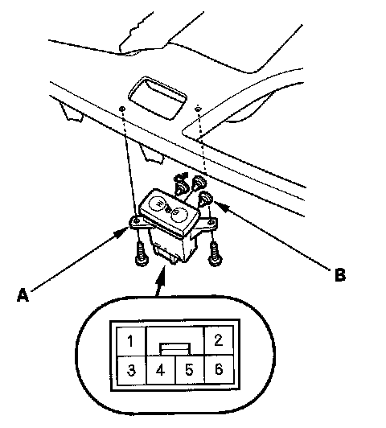
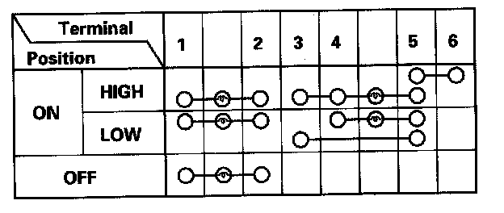
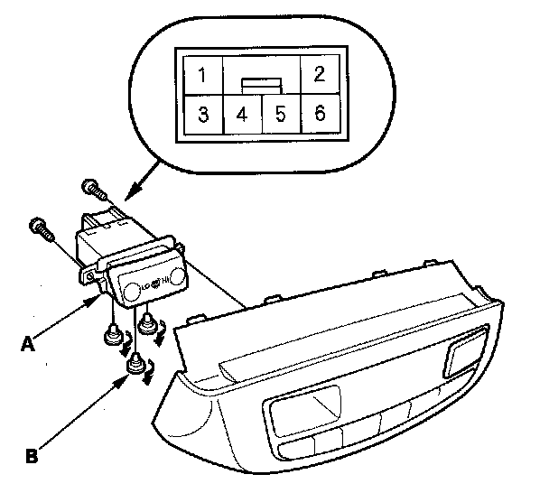
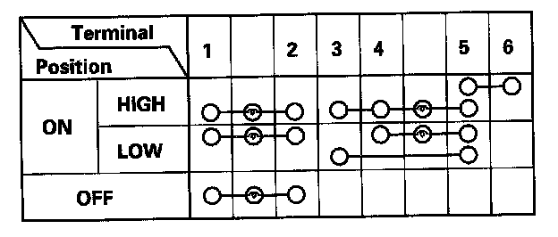

Seat Temperature Switch: Service and Repair
Seat HeatersSwitch Test/Replacement
Front Seat Heater
1. Remove the center console panel.

2. Disconnect the 6P connector from the seat heater switch (A).
3. Remove the two screws and the switch.

4. Check for continuity between the terminals in each switch position according to the table.
5. If the continuity is not as specified, replace the illumination bulbs (B) or the switch.
Second Row Seat Heater
1. Remove the center console rear trim.

2. Disconnect the 6P connector from the seat heater switch (A).
3. Remove the two screws and the switch.

4. Check for continuity between the terminals in each switch position according to the table.
5. If the continuity is not as specified, replace the illumination bulbs (B) or the switch.